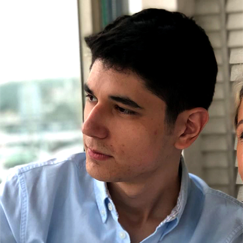
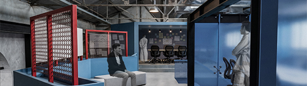
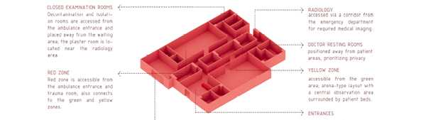
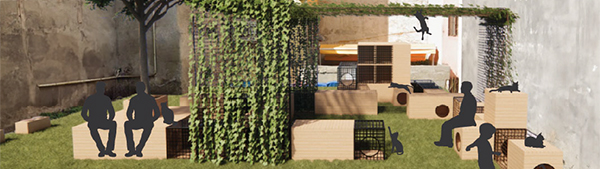
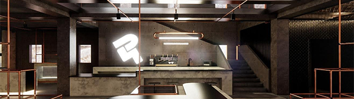
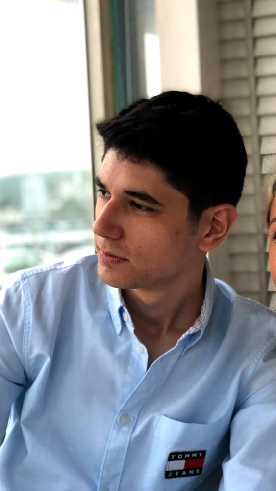
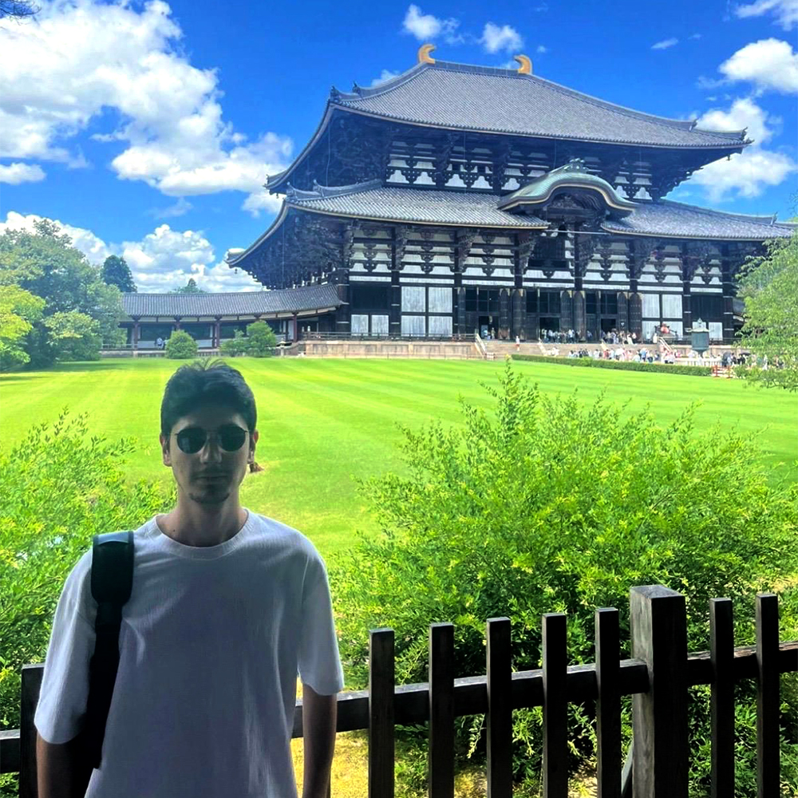
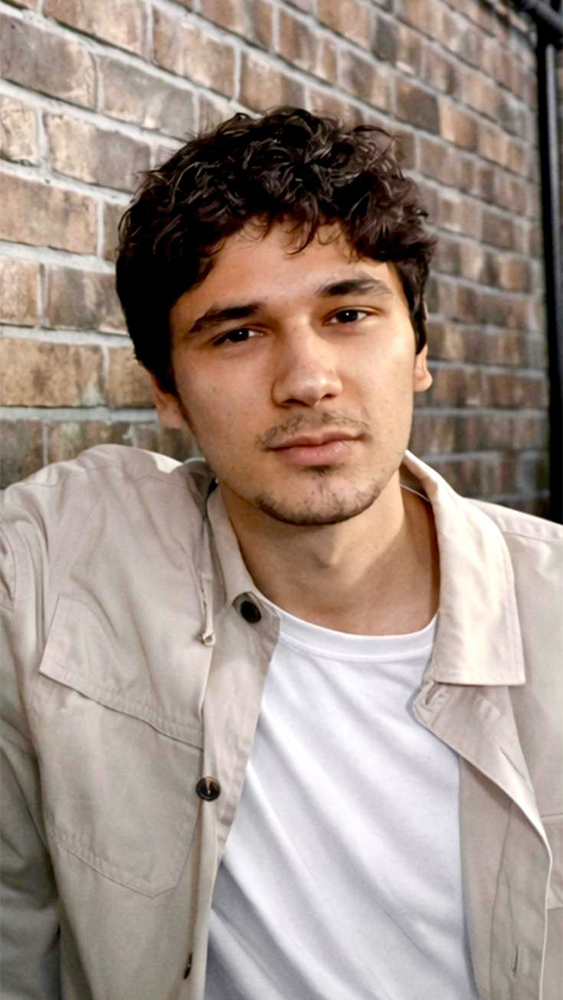
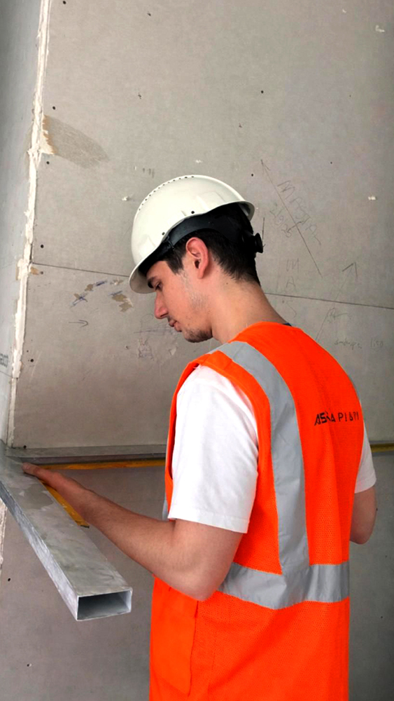

Education
Istanbul Technical University (ITU) Northern Cyprus
- August 2022 - June 2026
- Lectures taken at the ITU Istanbul Campus
- Bachelor's in Interior Architecture, under the roof of the NAAB-accredited ITU Faculty of Architecture
- Select Projects:
- Graduation Project [Spring 2026]
- Health and Design [Fall 2025]
- Urban Interiors [Spring 2025]
- Interior Architecture Design Studio II [Fall 2024]
- Relevant CourseworkStructural Mechanics, Introduction to Programming Language (Python), Building and Construction in Architecture, Building Materials, Environmental Control Studio, Survey and Representation Techniques in Interior Architecture, Economics, Introduction to Research in Design, Space and Furniture, Investigating Color & Light in Interior Architecture, Design Principles of Interior Finishing Systems, Paradigms & Case Studies in Adaptive Re-Use, Communication Design in Interior Architecture, Mathematics, Visual Communication, History & Theory in Interior Architecture, Interior Architecture Design Studios
Experience
Designist
Interior Architect
- October 2026 - Ongoing
- Istanbul, Turkey
- Work on technical drafting and winter garden design for a private villa in Mersin, producing detailed interior sections, construction drawings, and plan revisions, while developing spatial layouts, material palettes, and enclosure system alternatives
- Redesigned the lobby area for Hilton Maslak Hotel, creating alternative spatial layouts, curating furniture, fixtures, and equipment selections, producing interior visualizations, and preparing and presenting design proposals directly to the client
- Developed concept alternatives and interior visualizations for a private residential villa in Beykoz, focusing on spatial mood, custom furniture curation, and material integration across multiple living zones
Istanbul Technical University (ITU) Taskisla Faculty of Architecture
Academic Internship
- September 2026
- Istanbul, Turkey
- Modeled 3D virtual museum variations in Rhino and Grasshopper (3x3 room grid with adjustable opening widths and alignments) for a research project investigating spatial perception and user behavior in VR, building and configuring the real-time VR environment in Unity, managing scene hierarchy, colliders, materials, lighting, and XR integration, while writing C# scripts for a trigger-based Room Tracker system to log participant navigation paths
- Prototyped an eye-tracking data pipeline for the VIVE Focus Vision headset using OpenXR and VIVE SDKs, translating binocular gaze vectors into surface-level fixation points to capture which walls and architectural elements attracted user attention
Designist
Mandatory Office Internship
- July - August 2026
- Istanbul, Turkey
- Drafted technical sections and bespoke fixed-furniture details for residential projects with senior designers to refine material specifications, joinery solutions, and dimensional accuracy through feedback and revisions
- Co-designed a sustainable lighting fixture crafted from recycled windshield wiper blades alongside an industrial designer, starting from initial sketches and 3D modeling followed by material detailing, visualization, and in-house workshop prototyping
- Supported multidisciplinary project workflows between architects, interior architects, and suppliers by preparing design alternatives, participating in client meetings, and translating stakeholder feedback
ASTAS Yapi
Mandatory Construction Site Internship
- August - September 2025
- Istanbul, Turkey
- Developed shop drawings and technical revisions in AutoCAD for the Mandarin Oriental Etiler project, a luxury residential and hospitality construction, observing on-site implementation to establish practical understanding of the relationship between technical drawings and built outcomes
- Studied site operations, communication hierarchies, and quality control procedures involving construction managers, foremen, and workers, and monitored coordination workflows between architectural, mechanical, and electrical disciplines
- Gained hands-on familiarity with high-quality finishing materials, application methods, and the translation of design intent into detailed construction execution
Select Projects

DOKUZbes
Graduation Project [Spring 2026]
- Designed “DOKUZbes”, a creative agency for visible production with the imagined motto of “Stand Out” in the historic Beyazit Trolleybus Power Plant area for its adaptive reuse with the overall aim of preserving industrial heritage while overcoming passive, digital-only agency workflows and rigid office layouts
- Inserted a multi-story central "creative core" integrating prototyping, storage, and critique labs surrounded by flexible open workspaces, movable desks, and a forum-staircase system, with a bold, industrial-contrast interior visual identity including exposed roof trusses, blue steel structures, perforated metal, translucent glass, and vibrant red accents

Evidence-Based Emergency Department
Health and Design [Fall 2025]
- Designed an evidence-based Emergency Department starting with research and on-site observation to identify practical needs such as resolving cross-contamination risks and avoiding overlapping patient-staff circulation bottlenecks to minimize confusion and stress
- Established dedicated ambulance and walk-in entrances, strategically zoned triage, resuscitation, isolation, decontamination, and imaging units for rapid critical access, and separated staff zones with privacy-focused layouts for a patient- and staff-centered healthcare environment

Human–Cat Coexistence Hub
Urban Interiors [Spring 2025]
- Designed a project with the aim of revitalizing an underutilized, neglected intersection in Yeldegirmeni, Kadikoy by imagining a shared, multi-species micro-public space to resolve spatial neglect, chaotic stray cat shelters, and low community interaction
- Developed a low-cost, modular, and DIY-friendly architectural system using reclaimed pallet wood and metal mesh panels from nearby areas that integrates human seating with multi-level cat shelters, climbing surfaces, and shaded play zones, culminating in a community-driven tactical urbanism intervention

Dynast
Interior Architecture Design Studio II [Fall 2025]
- Designed a hybrid retail and social experience space, a multi-functional collector’s hub, to overcome passive, transaction-only shopping experiences and disconnected brand-community engagement
- Integrated labyrinth-style, museum-grade exhibition units, an interactive café and board game zone, and upper-level metalworking workshops for live artisan production and visitor classes, visually defined by dark concrete, structural steel, bronze accents, and interlocking spatial circulation
Academic Enrichment
- Gained information on fundamental indoor air quality (IAQ) concepts, including the relationship between IAQ and indoor environmental quality (IEQ), health impacts related to IAQ, common contaminants, and how contaminants may be measured
- Completed introductory course in architectural acoustics covering sound theory fundamentals including sound level measurement, propagation principles, and frequency characteristics
- Studied sound absorption materials, their acoustic properties, and application strategies for architectural environments
Gallery




Skills & Hobbies
Technical
- Python
- AutoCAD
- Sketchup
- Rhino
- Grasshopper
- C#
- Unity
- Adobe Illustrator
- Adobe Photoshop
Language
- Turkish (Native)
- English (C1)
- French (A2)
- Japanese (Beginner)
Hobbies
- Playing the piano